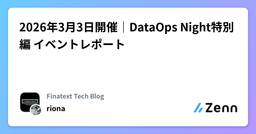
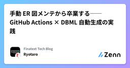
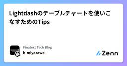

Finatext Tech Blogのフィード
https://zenn.dev/p/finatext
『金融を"サービス"として再発明する』Finatextグループのテックブログです。
フィード

2026年3月3日開催｜DataOps Night特別編 イベントレポート
Finatext Tech Blogのフィード
こんにちは！Finatextホールディングス/ナウキャスト 広報担当の及川です！本日は2026年3月3日開催した勉強会「DataOps Night特別編」のイベントレポートをお届けします！ 「DataOps Night特別編~Snowflake Data Superheroesが登壇~」を開催しました！2026年2月に「Snowflake Data Superheroes」が発表されました。全世界でわずか125名、日本国内からは15名のみが選出。その1人として、ナウキャストのデータエンジニア 大野 巧作（Kevin）が選ばれました！これを記念し、弊社主催の勉強会「DataOp...
2日前

手動 ER 図メンテから卒業する── GitHub Actions × DBML 自動生成の実践 46
46
Finatext Tech Blogのフィード
こんにちは、ナウキャストで LLM エンジニアをしている Ryotaro です。バックエンドの ER 図、ちゃんとメンテナンスできていますか？「コードは変えたけど ER 図の更新を忘れた」「いつの間にかドキュメントが実態と乖離していた」という経験は、多くのエンジニアに心当たりがあるのではないでしょうか。この記事では、SQLAlchemy モデルを Single Source of Truth（SSoT）として、GitHub Actions で DBML を自動生成・コミットする仕組みを構築しました。やってみたら結構うまくハマったので、その方法を紹介します。開発者はコードだけ修正すれ...
4日前

Lightdashのテーブルチャートを使いこなすためのTips
Finatext Tech Blogのフィード
はじめにはじめまして、ナウキャストでデータエンジニアをしているh-miyazawaと申します。主に金融機関向けに、Snowflakeを活用したデータ基盤構築やデータの可視化を支援しており、とあるプロジェクトでBIツールとしてLightdashを利用しています。Lightdashは、dbtと直接連携できるオープンソースのBIツールです。dbtのモデル定義をそのままグラフやテーブルとして可視化できるのが特徴で、以下のチャート種類が利用できます。テーブル（Table）ビッグナンバー（Big Number）棒・折れ線・面・散布図（Cartesian）円グラフ（Pie Char...
5日前

MCPゲートウェイの実装 Finatextグループ AI Connect Hub の技術構成
Finatext Tech Blogのフィード
こんにちは、ナウキャスト データ AI ソリューション事業のリードエンジニアの六車です。本記事は、弊社の片山が書いた「MCPサーバーのエンタープライズ展開の肝となるMCPゲートウェイというコンセプトの解説」の続編です。前回記事では MCP ゲートウェイの「Why / What」を整理しましたが、本記事では「実際にどう MCP ゲートウェイを実装したか」をご紹介します。本記事で紹介する AI Connect Hub は、Finatext グループ全体の「AI イネーブルメント」を支える MCP ゲートウェイ基盤です。ナウキャストを含む複数の事業会社・サービスにまたがる MCP ツール群...
10日前
データエンジニア・LLM エンジニア採用のスキルテストをリニューアルしました
Finatext Tech Blogのフィード
こんにちは、ナウキャストでリードエンジニアをしている六車です。ナウキャストでは、エンジニア採用の選考ステップの一つとして、書類選考を通過したエンジニア候補の方にスキルテストを受けていただいています。この度、そのスキルテストをリニューアルしました。具体的には、グループ会社である Finatext が運用しているソフトウェアエンジニア共通スキルテスト（参考記事）を、ナウキャストのデータエンジニアおよびLLM エンジニアの採用にも導入することにしました。「データエンジニアやLLM エンジニアなのに、なぜ職種固有の問題を出さないのか？」と思われた方もいるかもしれません。この記事では、そのテ...
11日前
AIの台頭でデザインとフロントエンドの垣根は融合しつつあるのか？ - Finatext Tech Night #6 イベントレポート
Finatext Tech Blogのフィード
株式会社FinatextのInsuretechドメインでデザインエンジニアを務めさせていただいている安藤（@ameprsand_xyz）です。本記事では2026/3/6に開催された AI時代のフロントエンド実践開発！ - Finatext Tech Night #6 のイベント及び、登壇させていただいた資料についてのレポートをお届けさせていただきます。 登壇セッションテーマ AIの台頭でデザインとフロントエンド開発の垣根は融合しつつあるのか？イベントでお話しさせていただいた内容は以下のスライドになります。以下、発表内容についてかいつまんでレポートを記載します。 現実的に...
11日前
「Developers Summit 2026」出展レポート
Finatext Tech Blogのフィード
2026年2月18日（水）〜20日（金）に有明セントラルタワーホール＆カンファレンスで開催された「Developers Summit 2026（デブサミ2026）」に、Finatextホールディングスとしてブース出展をしてきました！このレポートでは、ブースの様子や会場の雰囲気をご紹介します。 0. Developers Summit 2026 とは？「Developers Summit（デブサミ）」は、翔泳社が主催するITエンジニアのための一大カンファレンスです。毎年2月に開催されており、エンジニアにとって技術トレンドのキャッチアップや交流の場として親しまれています。今回のテー...
12日前
Webアプリのインフラエンジニアがデータ基盤を構築するので勉強してみた
Finatext Tech Blogのフィード
Webアプリを作ってきたインフラエンジニアがデータ基盤に挑戦するときの道しるべ最近クラウドインフラエンジニアとしてナウキャストに入社し、Webインフラ経験を土台にデータ基盤を学び始めました。Webアプリのインフラは継続して扱ってきましたが、データ基盤の設計は選択肢が多く、学習初期に迷いやすい領域でした。本記事は、インフラエンジニアの視点で、AIと一緒に学びながら整理したデータ基盤構築のナレッジです。「EC2やRDS、ALBなど触れてきましたが、データ基盤には触れていなかったので、データエンジニアリングってどうやるの？」という疑問から始まった学習記録を、共有できる形にしました。...
19日前
dbt private package を GitHub で管理する際の Tips
Finatext Tech Blogのフィード
はじめにこんにちは！ナウキャストのデータエンジニアのけびんです。dbt には、マクロやテストなどを再利用可能な形で配布できる「パッケージ」という便利な機能があります。公開されているパッケージを利用するだけでなく、組織内で共通的に使用するロジックを private package として管理することも可能です。https://docs.getdbt.com/docs/build/packages本ブログでは、private な dbt package を GitHub で管理し、ローカル開発環境と CI/CD 環境の両方で利用する際に直面した認証の課題と、その解決方法について紹...
2ヶ月前
Go Night Talks – After Conference の参加レポ
Finatext Tech Blogのフィード
Go Night Talks – After Conference 参加レポFinatextのInsurtech事業でバックエンドを担当しているデニスです。私は昨年10月、「Go Conference 2025」の直後に開催された非公開アフターイベント「Go Night Talks – After Conference」で登壇させていただきました。このイベントは11社合同で行われ、企業枠11、公募LT登壇枠3の合計14の発表がありました。参加企業が多かったため、この種の一般的なイベントよりも発表数も多く、夜遅くまで盛り上がっていました。参加方法は現地のみで、登壇者や運営を含めて...
2ヶ月前
Snowflake Intelligenceで実現するデータ分析レポート執筆の自動化(第4回金融データ活用チャレンジ)
Finatext Tech Blogのフィード
はじめに!tshoさんのコンテストデータ準備編は以下です。https://zenn.dev/snowflakejp/articles/82d0f73485587dSIGNATEで（金融庁共催）第4回金融データ活用チャレンジ が2026/1/14 ~ 2/11まで開催されています！本コンペティションでNowcastとしてSnowflake勉強会を開催したので、ソリューションの具体的な内容どういう思考でこのソリューションを選択したのか具体的な実装などをお伝えします！！!このブログで出てくるSnowflake IntelligenceやAI_PARSE_DOCU...
2ヶ月前
RCPs (Resource Control Policies) で S3 のHTTP通信をブロックするガードレールを敷く
Finatext Tech Blogのフィード
こんにちは、Finatextの @s_tajima です。2026年現在、インターネットの世界では、HTTPSの通信を行うのが当たり前になりました。Googleによる透明性レポートによる統計情報も、それを示しています。https://transparencyreport.google.com/https/overviewAOSSLという言葉もありましたが、今や誰もこの言葉を使っていないこともそれを証明していると思います。言うまでもなく、暗号化のされていないHTTPの通信というのは、盗聴や改ざんのリスクにさらされていて様々なリスクがあります。一方で、驚くべきことに、2026年にお...
2ヶ月前
Snowflake REST API で SSL CertVerificationError が出て沼った話
Finatext Tech Blogのフィード
こんにちは、ナウキャストで LLM エンジニアをしている Ryotaro です。Snowflake の Cortex Analyst を REST API 経由で叩こうとしたら、なぜか SSL エラーで怒られて結構ハマりました。snowflake-connector 経由だと普通に動くのに、requests で直接叩くとダメ。なんで？結論から言うと、アカウント名に _ が入っていると SSL 証明書のホスト名検証で弾かれるというオチでした。_ を - に変えるだけで解決します。ただ、なんで snowflake-connector だと動くのかが気になって GitHub のソースコー...
3ヶ月前
Amazon S3 のデータ転送料金の最適化
Finatext Tech Blogのフィード
この記事は、ナウキャスト Advent Calendar 2025 の 25 日目の記事です。 はじめにこんにちは！ナウキャストのデータエンジニアのけびんです。先日 Amazon S3 に関するコストを 30 % 削減した話についてまとめさせていただきました。https://zenn.dev/finatext/articles/aws-cost-savings-s3-phase1S3 には「ストレージ課金」「データ転送課金」「リクエスト数課金」と大きく分けて３種類のコストが発生しますが、ストレージ課金の削減余地を探し、実際に約30%のコストを削減できたという内容でした。今回...
3ヶ月前
AI時代のチーム開発を加速する「Agent Skills」について考察してみた
Finatext Tech Blogのフィード
0. はじめにこの記事は、Finatext Advent Calendar 2025 の25日目の記事です。2025年は、生成AIが急速に進化する中、組織としてどうAIと向き合うか、どう活用していくかを真剣に考えさせられる一年でした。そんな2025年の年の瀬にAnthropic社が公開したAgent Skillsについて、今後のチーム開発の生産性を大きく左右しそうだなと感じました。本記事では、Agent Skillsの概念理解から作成方法、活用例までを解説・考察しています。Agent Skillsは、AIエージェントがスクリプトやMCP、データソースと連携し、様々なタスクを効率...
3ヶ月前
Enabling Team Season 2を立ち上げました
Finatext Tech Blogのフィード
この記事はFinatext Advent Calendar 2025の24日目の記事です。こんにちは、Finatextの @s_tajima です。2023年に、「Enabling Teamを立ち上げました」という記事を書きましたが、その続編の記事です。前回の記事で紹介したEnabling Teamは、グループ横断で使える新しい認証基盤の開発 を足がかりに、OIDC/OAuthの提供開始や、証券業界・保険業界 においていち早くパスキーの導入を実現社内の複数の事業において、Amazon Connectを用いた柔軟なコンタクトセンターの開設といった実績を出すことにつながり...
3ヶ月前
AI Agent × Cortex Analyst で構造化データ検索精度を47%→97%に改善
Finatext Tech Blogのフィード
この記事は、ナウキャスト Advent Calendar 2025の 24 日目の記事です。 はじめにこんにちは、ナウキャストで LLM エンジニアをしている Ryotaro です。Snowflake Cortex Analyst と AI Agent を組み合わせることで、構造化データの検索精度を大幅に向上させることができました。この記事では、実際に構造化データ検索 AI Agent を構築し、47%だった精度を 97%まで段階的に改善した経験をもとに、実践的な Tips とつまづいた点を共有します。具体的には、AI Agent と Snowflake Cortex Anal...
3ヶ月前
Snowflake Native App Frameworkを利用したストアドプロシージャのサービス化を検証する
Finatext Tech Blogのフィード
この記事は、Nowcast Advent Calendar 2025の23日目の記事です。 はじめに株式会社ナウキャストでデータエンジニアをしている沼尻です。Snowflake Marketplaceでストアドプロシージャをクライアントに配布（サービス化）するため、Native Appの検証を行いました。Native Appに関する検証ブログはまだ少なく、公式ドキュメントも分散していて全体像を理解するのにとても時間がかかったので、構築手順をまとめておきたいと思います。みなさんにとって何か参考になれば嬉しいです。間違いなどがあればコメントでご指摘いただければ幸いです。 やりた...
3ヶ月前
【QCon San Francisco 2025 体験記】Netflix リードエンジニアが語る「コードを超えたシニアエンジニアの成長」
Finatext Tech Blogのフィード
この記事は、Finatext Advent Calendar 2025 の23日目の記事です。 はじめにサンフランシスコで毎年開催されているQConというカンファレンスに参加してきました！私が所属しているFinatextグループでは、福利厚生の一環で、毎年十数人程度、海外カンファレンスへの参加をサポートしてもらえる制度があります。参加申請が通ったら、参加したいカンファレンスに応じて個々人に予算が割り当てられ、カンファレンスの参加費用、渡航費、宿泊費、食費など、カンファレンス参加のために必要な費用で、かつ予算内であれば全てサポートしてもらえます。私も今回会社から費用をサポート...
3ヶ月前
5xxエラーの原因特定迅速化にトライしてみた
Finatext Tech Blogのフィード
この記事は、ナウキャストAdventCalendar2025の22日目の記事です。 はじめに皆さんこんにちは！ナウキャストでデータエンジニアをしている稲葉です。直近では、DataLensHub(オフィス営業、店舗開発)というWebアプリケーションの開発を行っています。DataLensHubは、営業支援や物件管理機能をワンストップで提供するプラットフォームです。生成AIを活用したデータの取り込みやレポートの作成、各社独自のカスタマイズ機能など、高度な要件を取り入れつつ日々進化しています。 モチベーションサービスの急成長に伴い、どうしても品質の安定化よりも顧客価値に直結する機...
3ヶ月前